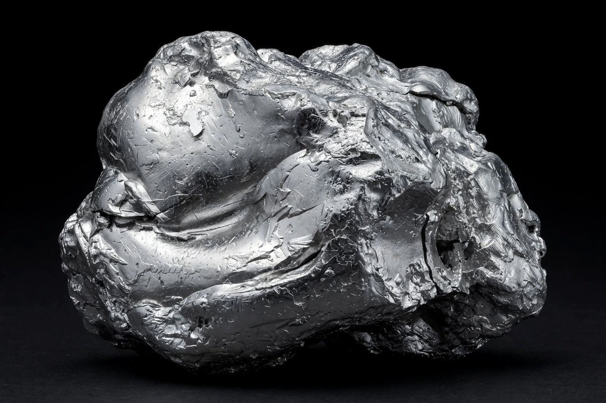

| Symbol | Ir |
|---|---|
| Atomic number | 77 |
| Group | 9 (platinum group) |
| Appearance | Silvery white |
| Atomic mass | 192.217 u |
| Density | 22.56 g/cm³ (second densest element) |
| Melting point | 2,446 °C (2,719 K) |
| Boiling point | 4,428 °C (4,701 K) |
| Discovery | Smithson Tennant, 1803 |
Iridium is a chemical element with the symbol Ir and atomic number 77. A very hard, brittle, silvery-white transition metal of the platinum group, it is the second-densest naturally occurring metal (after osmium) and the most corrosion-resistant metal known, even at temperatures as high as 2,000 °C. It was discovered in 1803 by the English chemist Smithson Tennant in the residue of dissolved platinum ore, and named after the Greek goddess Iris because of the varied colours of its salts.
Iridium is one of the rarest elements in Earth's crust, with annual production of only a few tonnes, mostly as a by-product of nickel and platinum mining in South Africa, Russia, Canada, and Zimbabwe. Because iridium is much more abundant in meteorites than in crustal rock, the anomalous iridium layer found worldwide at the Cretaceous–Paleogene boundary became key evidence for the asteroid-impact theory of the dinosaur extinction proposed by Walter and Luis Alvarez and colleagues in 1980.
Iridium's hardness, high melting point, and corrosion resistance make it valuable in spark plug electrodes, crucibles for crystal growth, electrical contacts, and as a hardening agent in platinum alloys used in medical implants and jewellery. The international prototype metre bar and kilogram were made of a platinum–iridium alloy. The element also gives its name (indirectly, by chemical terminology reuse) to the Iridium satellite constellation.
Categories: Chemical elements | Transition metals | Precious metals